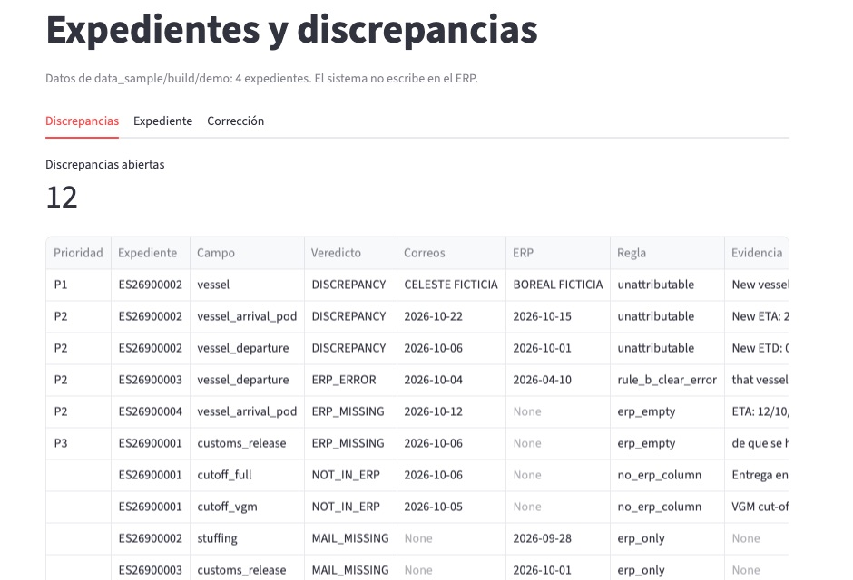
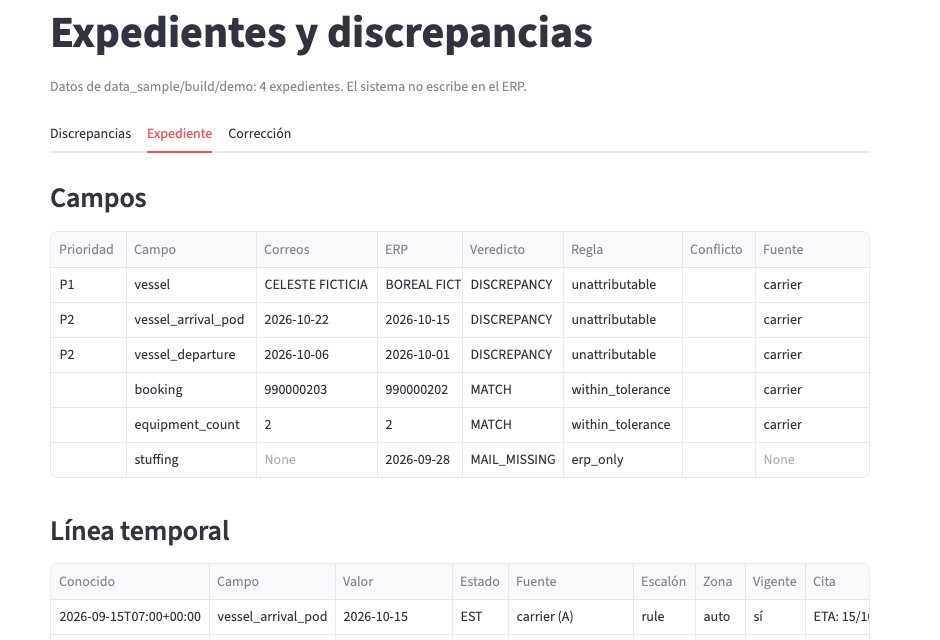

Propuesta técnica
Ingeniero IADe los correos operativos a un expediente fiable
Un sistema que lee los correos, sabe a qué expediente pertenecen, decide qué dato está vigente, avisa de lo que no cuadra con DEIWORLD y aprende de cada corrección del equipo. La decisión final la toma siempre una persona.
Recorrido
Una propuesta, cuatro miradas
Qué cambia en el día a día
El problema, la pantalla de trabajo, qué hace el operativo y cómo se decide qué dato vale.
Diapositivas 4 a 7
Diseño y modelo de IA
Arquitectura, decisiones con sus alternativas, modelo de IA y datos.
Diapositivas 8 a 11
Fiabilidad y entrenamiento
Cuánto acierta, cómo aprende de cada corrección y cómo evita aprender errores.
Diapositivas 12 a 15
Operación y coste
Qué hay que operar, coste, escalabilidad y confidencialidad.
Diapositivas 16 a 19
Forma de trabajar
Cómo se abordó la prueba y qué hace la prueba de concepto.
Diapositivas 3 y 20
Forma de trabajar RRHH · Todos
Entender antes de construir, y medir en vez de suponer
- Entender el problema. Primero se analizaron los correos y el ERP de la muestra, y se recogieron 13 preguntas para EShipping antes de diseñar: volumen real, significado de algunos campos del ERP, proveedor de IA autorizado…
- Decidir por escrito. Cada decisión relevante tiene su registro (ADR), con las alternativas y el motivo del descarte.
- Construir lo justo. Una prueba de concepto sencilla, de extremo a extremo y con calidad de producción.
- Medir. Coste recalculado con lo medido, tres modelos de IA comparados y una prueba de volumen.
- Ser claro con los límites. Qué está hecho, qué está diseñado y qué no se puede concluir con una muestra pequeña.
El desarrollo se apoyó en un asistente de IA para programar (Claude Code), con el mismo proceso de revisión: cada cambio pasa por una petición de cambio con integración continua. Las decisiones y la revisión son del autor.
registros de decisión (ADR)
documentos de análisis, diseño y evaluación
peticiones de cambio revisadas por integración continua
pruebas automáticas, cobertura del 97 %
El problema Operativa
Un expediente, cinco correos y un ERP que se queda atrás
- NAVIERA · 15/09Confirma la reserva: buque BOREAL FICTICIA, salida el 01/10, llegada el 15/10.
- CLIENTE · 18/09Pregunta si puede adelantar la carga.
- NAVIERA · 24/09Cambio de buque: ahora CELESTE FICTICIA, salida el 06/10, llegada el 22/10.
- EQUIPO INTERNO · 25/09Reenvía el primer aviso, con las fechas antiguas, para otra consulta.
- AGENTE DE ADUANAS · 03/10Comunica el levante.
Y DEIWORLD sigue con BOREAL FICTICIA y la salida el 01/10.
Hoy
Una persona tiene que leerlo todo, saber que el correo de la naviera manda sobre el reenvío, darse cuenta de que el ERP está desfasado y corregirlo a tiempo. Con unos 100.000 correos al mes, algo se escapa, y el problema aparece cuando ya cuesta dinero.
Con el sistema
Lee los cinco correos, entiende que la naviera manda en el buque y que el reenvío es antiguo, y pone el caso en lo alto de la lista: «Cambio de buque sin reflejar en el ERP, urgente», con la frase exacta del correo como prueba.
Ejemplo sintético, construido con patrones reales de la muestra: cambios de buque, reenvíos de avisos antiguos y errores de tecleo en el ERP.
Qué cambia en el día a día Operativa
Una lista de lo que no cuadra, por urgencia; la decisión es de operativa

Vista de la prueba de concepto, con datos sintéticos.
- Lo urgente, arriba (P1): un cambio de buque o de salida se avisa al momento. Lo que solo falta por rellenar va al final (P3).
- Cada propuesta trae su prueba: la frase literal del correo y quién la dijo. No hace falta buscar en el buzón.
- Detecta errores del ERP, como el día y el mes cruzados: el 04/10 grabado como 10/04.
- La última palabra es del operativo: aceptar, corregir o rechazar. El sistema nunca escribe en DEIWORLD.
- Cada corrección enseña al sistema: la próxima vez ese caso llega resuelto o mejor priorizado (diapositivas 13 a 15).
Gestión de operativa Operativa
Qué hace el operativo, paso a paso
Qué llega a la cola
| Tarea | Ejemplo |
|---|---|
| El ERP no coincide | Los correos dicen CELESTE y el ERP sigue con BOREAL |
| Las fuentes se contradicen | Naviera y agente dan salidas distintas el mismo día |
| Dato dudoso | Una fecha que no se lee con confianza suficiente |
| Correo sin expediente claro | No trae ningún identificador, o encaja en dos expedientes |
No llega: lo que cuadra, ni lo que el ERP ya tiene más actualizado que los correos. De eso solo se audita una muestra.
Las tres decisiones posibles
| Aceptar | La propuesta es correcta. El operativo actualiza DEIWORLD, como hoy (o se genera una exportación aprobada). El sistema no escribe en el ERP. |
| Corregir | El sistema leyó mal. El operativo escribe el valor bueno, que queda como dato de una persona y enseña al sistema. |
| Rechazar | El ERP tenía razón. Se indica el motivo, que también enseña al sistema. |
Ambigüedad entre fuentes Operativa Arquitectura
Decide con reglas explícitas, las mismas que aplicaría una persona
- Cada fuente manda en lo suyo: la naviera en el buque y sus fechas, el agente en el levante y el transportista en la carga.
- Lo real manda sobre lo previsto, aunque llegue antes.
- Entre fuentes fiables, gana la más reciente. Lo anterior queda en el historial.
- Un reenvío o una pregunta no cambian nada: quedan pendientes de confirmar.
- Si dos fuentes fiables se contradicen, no elige: lo envía a revisión.
- La corrección humana prevalece, y avisa si después la naviera dice otra cosa.
Cada dato guarda su estado (planificado, estimado o real), su fuente y su rol: una ETD estimada de un correo y una salida real de la naviera nunca se mezclan. Las reglas están escritas y son configurables (ADR-0009).

Vista del expediente: el valor de los correos frente al del ERP, quién lo dijo y, debajo, toda la historia.
Arquitectura Arquitectura Sistemas
Monolito modular hexagonal, desplegado como workers por etapa
Justificación técnica Arquitectura
Lo que se eligió, lo que se descartó y por qué
| Decisión | Descartado | Por qué | ADR |
|---|---|---|---|
| Monolito modular con workers por etapa | Microservicios | Un equipo pequeño y un solo modelo de dominio. El escalado por etapa se consigue igual, sin operar N servicios. | 0007 |
| Eventos inmutables con cita y fuente | Sobrescribir campos | Para decidir hace falta la historia (real frente a estimado, el más reciente), y para explicar y auditar cada veredicto. | 0006 |
| Reglas deterministas para el veredicto | Que decida un LLM | Explicables, reproducibles y configurables por negocio. El LLM solo extrae. | 0009 |
| IA híbrida en cascada | Todo al LLM | Unas 90 veces más caro, más lento y no determinista. Las reglas resuelven la mayor parte. | 0008 |
| PostgreSQL como base y como cola | Kafka o RabbitMQ | Unas decenas de tareas por minuto: una pieza menos que operar. Cambiar es un adaptador. | 0011 |
| Contenedores portables, sin Kubernetes | Kubernetes | Unos 13 procesos: el clúster cuesta más de lo que aporta, salvo que ya se opere uno. | 0012 |
| Rol del remitente en cascada, a partir del ERP | Dar de alta cada dominio | Escriben miles de dominios. Un directorio manual no escala y falla sin avisar. | 0013 |
| LLM de producción en la UE, sin retención | API sin garantías de región | Datos de clientes: residencia en la UE, sin entrenamiento y con contrato de encargado. | 0010 |
Modelo de IA Arquitectura Todos
1Híbrido en cascada: cada técnica donde rinde más
| Opción | A favor | En contra | Papel en la propuesta |
|---|---|---|---|
| Solo reglas | Precisas, gratis, explicables. Validan con dígito de control (contenedores ISO 6346). | No entienden el texto libre; cada formato nuevo es trabajo manual. | Primer escalón: identificadores, fechas, buques, plazos, puertos |
| NLP clásico | Barato y rápido; se reentrena con las correcciones. | Necesita correos etiquetados; no sirve para extraer valores del texto libre. | Clasificar correos (TF-IDF + regresión logística) cuando haya etiquetas |
| Solo LLM | Entiende cualquier redacción, sin entrenar. | Unas 90 veces más caro, no determinista, puede inventar, depende de un tercero. | Solo el texto libre que no resuelven los escalones anteriores |
| Híbrido en cascada ✓ | Lo mejor de cada uno; el coste baja con el tiempo. | Más piezas que mantener. | Elegido (ADR-0008): reglas, plantillas, ML, LLM y, al final, una persona |
El LLM, acotado
Devuelve JSON con esquema y una cita literal que se comprueba en el correo; si la cita no existe, se descarta. No decide la asociación ni el veredicto, así que un correo malicioso no mueve nada. Rellena huecos, pero nunca sustituye un valor leído por las reglas (ADR-0014).Elegido con datos
Se compararon tres modelos locales sobre la muestra. Empatan en resultado final, yqwen3.5:4b propone con más precisión que llama3.2:3b y con la mitad de memoria que gemma4:e4b (ADR-0015). En producción, una API en la UE elegida con el mismo procedimiento.
Datos Arquitectura Operativa
2Qué datos obtiene y cómo se estructuran
| Grupo | Campos |
|---|---|
| Identificadores | Expediente, booking, B/L y contenedor (con dígito de control, separado de precintos y teléfonos) |
| Transporte | Naviera, buque y viaje, puertos de origen y destino (UN/LOCODE), ETD y ETA |
| Plazos | Cut-off documental, de VGM y de entrega del contenedor |
| Mercancía y aduana | Carga en almacén, número de contenedores, levante |
| Tipo de evento | Confirmación, retraso, cambio de buque, roleo, transbordo |
Cada observación lleva: valor, estado (planificado, estimado o real), cita literal, remitente y rol, escalón que la extrajo y confianza. Es bitemporal: cuándo ocurre el hecho, cuándo lo dijo la fuente y cuándo lo registró el sistema. Así se responde «qué se sabía del expediente el día X».
En la prueba de concepto, el transbordo, la omisión de escala y el DUA quedan diseñados, pero no implementados.
Fiabilidad Todos
3Cuando decide solo, tiene que acertar; si duda, pregunta
Qué se espera
La precisión de lo automático se impone: 98 % en los campos críticos y 99,5 % en la asociación. El umbral de cada campo se fija para que el límite inferior del intervalo cumpla el objetivo.
Lo que se mide es la cobertura: cuánto resuelve solo. Objetivo: menos del 15 % de los correos a revisión.
Cómo se mide
Confianza calibrada: la probabilidad real de acierto, aprendida por campo (no la que declara el modelo).
Auditoría por muestreo de lo aceptado solo, unas 400 muestras al mes por campo crítico. Si la precisión cae, el umbral se endurece automáticamente; relajarlo exige a una persona.
Baja confianza
| Alta | Se acepta y entra en la auditoría |
| Media | A revisión, con su evidencia y prioridad P1–P3 |
| Baja | No se propone; si falta un dato crítico, el expediente queda marcado |
| Medido en la muestra real (solo reglas) | Resultado |
|---|---|
| Correos asociados solos a su expediente, y bien | 35 de 35 |
| Datos aceptados sin revisión que son correctos | 90 % (54 de 60) |
| Precisión de la extracción | 86 % |
| Veredicto exacto frente al ERP | 74 % (63 de 85) |
Aprendizaje continuo · entrenamiento Todos
4Cada corrección se convierte en una mejora medible
| Qué se entrena | Cómo | Con qué | Ritmo |
|---|---|---|---|
| Calibración de la confianza | Regresión logística por campo | Revisiones y auditoría (desde 200 etiquetas) | Semanal |
| Clasificador de correos | TF-IDF + regresión logística | Correcciones de clase | Semanal |
| Ejemplos para el LLM | Hasta tres ejemplos validados del mismo remitente (few-shot) | Correcciones con doble revisión o auditoría | Continuo |
| Plantillas por proveedor | Inducidas de los formatos repetidos que resuelve el LLM | Salidas del LLM validadas | Al aparecer |
| Perfiles y alias | Formato de fechas, rol del remitente, bookings tras un roleo | Correcciones y asociaciones validadas | Continuo |
| Modelo propio, más adelante | Ajuste fino de un modelo pequeño | Miles de ejemplos validados por campo | Con volumen |
La clave: no se reentrena un LLM gigante; se entrenan modelos pequeños y explicables, y el LLM aprende con ejemplos. El trabajo baja por la cascada: lo que hoy resuelve el LLM, mañana lo resuelve una plantilla.
Aprendizaje continuo · fuentes Todos Operativa
4Aprende de los operativos y de la relación con clientes y proveedores
De los operativos que usan la aplicación
| Señal | Qué enseña |
|---|---|
| Corrección | El valor correcto de un campo, la clase o el expediente |
| Validación | Que la propuesta era correcta, si no fue apresurada |
| Rechazo con motivo | Que la propuesta era errónea, y por qué |
| Muestra de auditoría | Si lo aceptado solo era correcto, sin sesgo de selección |
Corregir no edita lo que dijo la fuente: añade una observación humana con autor y fecha, y el expediente se vuelve a calcular.
De la relación con clientes y proveedores
- Perfil de cada remitente: formato de fechas, zona horaria, idioma, qué datos suele enviar y qué hay que pedirle.
- Rol aprendido por dominio: qué tipo de correos manda y en qué expedientes aparece, sin dar de alta dominios uno a uno.
- Confirmaciones posteriores: una salida estimada que acaba siendo la real refuerza a esa fuente.
- Fiabilidad por naviera y ruta: la diferencia entre la ETA estimada y la real. Una naviera que suele acertar pesa más, y operaciones planifica mejor.
- Proveedores problemáticos: cambios de última hora, roleos y discrepancias.
Estas señales implícitas refuerzan o debilitan, pero nunca sustituyen una etiqueta humana en los campos críticos.
Aprendizaje continuo · control de calidad Todos Arquitectura
4Cómo se evita que aprenda de errores: cuatro reglas
1 · Solo aprende de personas
Nunca de sus propias respuestas automáticas, ni de lo que dice el ERP, que también se equivoca. Solo de lo que ha confirmado un operativo o la auditoría.2 · Comprueba al operativo
Su corrección pasa los mismos controles que un dato leído (fecha posible, puerto que existe). Un 10 % lo revisan dos personas, y se detecta quien valida sin leer.3 · Espera antes de aprender
Una corrección espera 7 días antes de usarse. Si en ese tiempo algo la contradice, como la salida real del buque, vuelve a revisión.4 · Todo se puede deshacer
Cada versión aprendida sabe con qué correcciones se hizo. Si una era errónea, se rehace sin ella y se reprocesan los expedientes afectados.Ejemplo
Un operativo corrige la salida al 16/10 cuando era el 06/10. Es una fecha posible, así que pasa los controles. Durante la espera de 7 días, la naviera confirma la salida real el 06/10: la contradicción salta, la corrección vuelve a revisión y nunca llega a entrenar el sistema.Quién aprueba qué
Mejoras de estimación: automático, si no empeoran la evaluación. Plantillas nuevas: el equipo técnico. Qué fuente manda o bajar un umbral: operaciones.En la prueba de concepto
La corrección como dato humano que recalcula el expediente, los alias aprendidos (4 en la demo) y el formato de fechas por remitente. Los controles de calidad están diseñados.Operación Sistemas
Poca infraestructura, integraciones de solo lectura y nada exótico
Infraestructura
- Una sola imagen de contenedor, con un rol por etapa.
- Servidores de aplicación pequeños, duplicados para que una caída no pare el servicio.
- PostgreSQL con primario y réplica, y particiones mensuales.
- Almacén de objetos compatible con S3 y monitorización con OpenTelemetry.
- En la nube de EShipping, en la UE, o en máquinas virtuales con Docker Compose.
Integraciones y acceso
- Buzón: Microsoft Graph con permiso de solo lectura, restringido a los buzones operativos.
- DEIWORLD: solo lectura, por exportación o API. Nadie escribe en él.
- Inicio de sesión con el directorio corporativo (Entra ID) y doble factor; roles por equipo.
- El equipo técnico no ve el contenido de los correos por defecto.
Seguridad y continuidad
- Red privada; solo se expone la aplicación de revisión. Salida a Internet por lista blanca.
- Secretos en un gestor, con rotación. TLS en todo y cifrado en reposo.
- Copias diarias con recuperación a un momento dado: RPO de 15 min y RTO de 4 h.
- Si algo se pierde, se vuelve a leer del buzón sin duplicados.
- Despliegue gradual, con modo sombra y vuelta atrás.
Coste Sistemas Dirección
5Unos 330 € al mes con 100.000 correos, medido y no supuesto
Computacional (medido en la prueba de concepto)
| Ingesta: parseo, división del hilo y deduplicación | 2,4 ms por mensaje |
| Clasificación, rol, asociación y extracción | 3,3 ms por mensaje |
| Reconciliación con el ERP | 3,1 ms por expediente |
| Todo un mes de 100.000 correos, sin LLM ni OCR | ≈ 15 min de CPU |
| Llamadas al LLM al mes | ≈ 37.500 |
| Tokens por llamada (medidos) | ≈ 360 de entrada, 100 de salida |
Económico (al mes, sin IVA)
| Partida | 100.000 | 150.000 |
|---|---|---|
| 2 servidores de aplicación | 173 € | 173 € |
| 2 servidores de base de datos | 87 € | 87 € |
| Monitorización y almacén de objetos | 42 € | 42 € |
| LLM (proveedor en la UE) | 25 € | 37 € |
| Total técnico | ≈ 330 € | ≈ 340 € |
| Por correo | 0,33 cént. | 0,23 cént. |
Dimensionamiento de referencia, a ajustar con el volumen y la infraestructura reales. Las máquinas son el 90 %. Peor caso de la sensibilidad del LLM: unos 257 $, aún menos que las máquinas. Sin cascada, unas 90 veces más. Precios oficiales del 23/11/2026. El tiempo de revisión del equipo se mide en horas, no en euros.
Escalabilidad Sistemas Arquitectura
6De 100.000 a 150.000 correos: más réplicas, no otro diseño
| Crece un 50 % | Cómo se absorbe |
|---|---|
| Lectura y procesado | Cada etapa tiene su propia cola y escala por separado: se añaden réplicas solo de la que lo necesite. Sin tocar código. |
| Llamadas al LLM | Crecen en proporción, y menos con el tiempo porque las plantillas le quitan trabajo. Basta revisar el límite de uso contratado y el presupuesto. |
| Base de datos | Tablas particionadas por mes: lo antiguo se archiva sin afectar a lo reciente. |
| ERP y buzón | Solo lectura e incremental: se procesa lo que ha cambiado. |
| Revisión humana | Lo único que no se arregla con máquinas. Si el porcentaje a revisión no bajara, crecería un 50 %. Por eso la cola prioriza y el aprendizaje continuo reduce ese porcentaje. |
Medido en la prueba de concepto
10.010 mensajes y 2.860 expedientes sintéticos procesados en 66 s en un portátil. Con cuatro veces más mensajes, cuatro veces más tiempo: crece de forma lineal, sin perder calidad.El tamaño exacto, con datos reales
Cuántas máquinas hacen falta depende del volumen real por hora y de la infraestructura de EShipping. Se fija en el piloto midiendo; lo que no cambia es el diseño.Confidencialidad Todos Sistemas
Los datos de EShipping no han salido del equipo
En la prueba técnica
- Todo se ha procesado en local: los datos reales viven en una carpeta excluida del repositorio y el modelo de IA corre en el propio equipo (Ollama).
- Ningún dato se ha enviado a servicios externos.
- Bloqueos automáticos al guardar cambios y en la integración continua, y una auditoría que comprueba que ningún valor real aparece en el repositorio ni en su historial.
- Ejemplos, pruebas y capturas, con datos sintéticos.
- Al terminar el proceso de selección se borran todas las copias.
En producción
- El único servicio externo es el LLM: en la UE, sin retención y sin uso para entrenar, con contrato de encargado del tratamiento.
- Recibe solo el mensaje nuevo, limpio y seudonimizado; nunca el hilo ni los adjuntos.
- Si EShipping no autoriza un proveedor externo, un modelo propio alojado en la UE.
- Logs sin datos personales y registro de auditoría de cada acceso y cada decisión.
Prueba de concepto Todos
La prueba de concepto, en resumen
| Lo que pide el enunciado | Cómo lo hace | |
|---|---|---|
| Admite correos nuevos | Ingiere cualquier .eml o .msg, sin duplicados | hecho |
| Clasificación | Tipo de correo: reserva, buque, transporte, aduana, ruido… | hecho |
| Extracción | Reglas y LLM local, con cita literal de cada dato | hecho |
| Organización por expediente | Asociación por identificadores y alias aprendidos | hecho |
| Cruce con el ERP | Valor vigente frente al CSV de DEIWORLD, campo a campo | hecho |
| Discrepancias | Priorizadas P1–P3, con su evidencia y aviso de las urgentes | hecho |
| Datos resultantes | Base consultable, informe por expediente y vista para operativos | hecho |
| Aprendizaje | Correcciones, alias y perfil de fechas; el resto, diseñado | parcial |
Cómo se prueba
make demo: todo el proceso sobre correos sintéticos.make ui: la vista para operativos.make volume: la prueba de volumen.
asociaciones automáticas correctas en la muestra real
para 10.010 mensajes sintéticos
379 pruebas automáticas, cobertura del 97 %, tipado estricto e integración continua. Diseñado, pero fuera de la prueba: plantillas, ML clásico, transbordo, DUA y OCR.
Gracias
Turno de preguntas